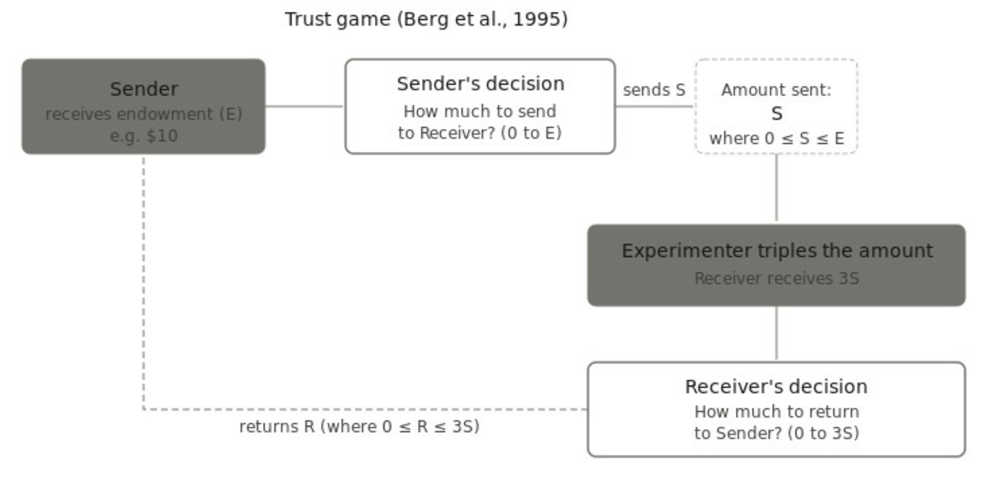

12 Trust
written by Camilo Ordóñez-Pinilla (original draft), and Sergio Barbosa (revision)
12.1 The Classic
Trust is an attitude toward others – other persons, groups of persons, and institutions – in which there is (a) an expression of vulnerability to that other, and (b) a belief that the other has the ability, the willingness, and will in fact act in ways that benefit us in light of that vulnerability, as opposed to taking personal advantage of it. For example, people leave their children in the care of other adults (to whom they are vulnerable) and express trust insofar as they believe those adults can, want to, and will care for their children well. The other in whom trust is placed may be an individual (interpersonal trust), a group (in-group/out-group trust), or an institution (institutional trust). In this chapter, we focus on interpersonal trust, where trusted others are individuals.
#definition Trust
An attitude toward others – other persons, groups of persons, and institutions – in which there is (a) an expression of vulnerability to that other, and (b) a belief that the other has the ability, the willingness, and will act in ways that benefit us in light of that vulnerability as opposed to taking personal advantage of it.
Deutsch (1958) was a pioneer in the experimental study of interpersonal trust. He defined trust as the expectation that something will occur—for example, that a person will behave in a certain way—such that, if this expectation is fulfilled, it results in positive and pleasant consequences for the self; whereas, if it is not fulfilled, it leads to negative and unpleasant consequences. Based on this definition, Deutsch used the Prisoner’s Dilemma as the experimental task to determine which factors motivate interpersonal trust. A Prisoner’s Dilemma is a two-player game in which each player must decide whether to cooperate with another player who is making the same decision simultaneously, knowing that mutual cooperation yields the best group outcome (known as the game’s Pareto optimum), mutual defection produces the worst outcome for both (known as the game’s Nash equilibrium), but defecting while the other player cooperates yields the best individual outcome. Prisoner’s dilemma takes its name from a relatively common situation in law enforcement where two suspects are apprehended for committing the same crime. If both suspects cooperate (i.e., do not confess to the crime) they both receive a relatively light sentence (i.e., the best “group” consequences) whereas if both defect (i.e., confess to the crime) they both get harsher sentences. Interestingly, if only one of them defects then they get the best individual outcome (i.e., no prison sentence while their accomplice gets a harsh sentence). Prisoner’s dilemmas then pit against each other individual and group interests. In this game, trust can be operationalized as a choice to cooperate even when defecting could result in a best individual outcome. Figure 1 presents a schematic representation of the prisoner’s dilemma.

In his main experiment, Deutsch divided participants into three groups according to the type of motivation they were expected to adopt while playing the Prisoner’s Dilemma: (1) cooperative motivation, in which participants were encouraged to consider the other person’s welfare as equally important as their own; (2) individualistic motivation, in which participants were motivated to care only about their own welfare; and (3) competitive motivation, in which participants were motivated both to maximize their own welfare and to obtain a greater benefit than the other person. Deutsch hypothesized that trust would arise when individuals interacted under a cooperative motivational orientation, would not arise in a competitive motivational context, and could arise among individuals with an individualistic motivation, provided that they had knowledge about how the other person was going to play.
Unfortunately, Deutsch does not clearly explain how he ensured that participants actually adopted the motivational orientation assigned to their group while interacting in the Prisoner’s Dilemma. He only mentions that participants were verbally instructed to adopt the corresponding motivation. The paper does not report any manipulation checks or measures assessing whether these motivational manipulations were in fact successful.
The results of the main experiment showed that, consistent with Deutsch’s hypotheses, whereas 89% of participants in the cooperative motivation condition trusted one another, trust emerged in only 12.5% of participants in the competitive motivation condition.
Following these early experimental studies exploring the conditions under which trust emerges in strategic social interactions, empirical research also began to focus on understanding the construct structure of trust in terms of individual differences. Rotter (1967) developed the Interpersonal Trust Scale based on the idea that trust involves a generalized expectancy that the verbal behavior of others (e.g., promises and statements) can be relied upon. A person who scores high on interpersonal trust is a person who tends to easily trust other people’s manifest intentions or promises.
From a neurobiological perspective, Kosfeld et al. (2005) was pioneering in reporting findings suggesting that oxytocin is a key neuropeptide involved in trust. To arrive at this finding, they used a trust game (Berg et al., 1995), in which one participant decides how much money to transfer to an anonymous partner; this amount is then tripled, and the receiving participant decides how much to return (see Figure 2). Participants who received intranasal oxytocin sent significantly more money than those who did not receive it (Kosfeld et al., 2005). According to Baumgartner et al. (2008), a possible mechanism underlying this effect is that increased oxytocin is associated with reduced activation in the amygdala, midbrain regions, and the dorsal striatum, suggesting that the mechanism involves a reduction in fear, stress, and anxiety associated with the possibility of betrayal consequently making it easier to trust someone else.
#definition Trust Game
An experimental task used to measure interpersonal trust, in which one participant receives an initial endowment and decides how much to send to another participant. The amount sent is increased by the experimenter, and the second participant then chooses how much to return if at all. The initial transfer is interpreted as reflecting trust, as it involves risking resources under uncertainty about the other’s behavior, while the returned amount is interpreted as reflecting trustworthiness as the participant chose to return the endowment that they could have easily kept for themselves.

#yourturn
How much money would you send in a trust game? Why? How did you decide how much money to send?
How much money would you expect to receive from the trustee in a trust game? Why?
12.2 The Aftermath
Rotter’s definition of trust served as the main reference point in trust research until the 1980s, when important extensions were developed in the scientific literature. On the one hand, Larzelere & Huston (1980) distinguished between trust as a generalized expectancy and trust as an expectancy directed toward a specific other proposing the Dyadic Trust Scale. The difference being that one’s trust towards specific others (i.e., specific trust) can be influenced by information about the considered person such as their specific prior actions, group biases and so on. On the other hand, Mayer et al. (1995), reflecting on dynamics in organizational contexts, argued that trust should not be understood solely in terms of expectations about others, but also as involving a willingness to accept vulnerability in front of them (measured, for instance, with the Propensity to Trust Survey, Evans & Revelle, 2008). In their model, trust is explained as a function of perceived ability to act positively, benevolence (a tendency to actively do good), and integrity (the alignment between the values of the trustor and the trustee).
In addition, more recent approaches have proposed that trust should be defined as a form of behavior rather than as a belief, expectation, or attitude (Fehr, 2009). Within this framework, trust is understood as the act of voluntarily placing resources at the disposal of another person, accompanied by the expectation that this act will contribute to one’s own goals. Based on this definition, Fehr argues that trust, as a behavior embedded in a context of social interaction, cannot be explained solely in terms of motivational states, but rather through the interplay between individual and social preferences. Specifically, contemporary research has examined whether trust can be explained exclusively by individual preferences toward risk (i.e., risk aversion) or whether social preferences, such as betrayal aversion, must also be considered.
In this context, the work of Bohnet & Zeckhauser (2004) and Bohnet et al. (2008) is particularly important. They compared decisions across two games with identical payoff probabilities: one involving social interaction (a trust game, in which the payoff depends on how much money the other participant returns) and another involving a random process (a lottery). In both games, participants estimated a MAP (minimum acceptance probability). In the trust game, the MAP refers to the minimum probability that the other participant will return a certain amount of money required for the participant to decide to send a given amount. In the lottery game, the MAP refers to the minimum probability of obtaining a favorable outcome necessary for the participant to choose the lottery over a guaranteed gain. The results showed that participants required significantly higher probabilities (15% higher) to trust another person than to accept an equivalent lottery. These findings suggest that betrayal aversion operates beyond simple risk aversion, which was held constant across both the trust and lottery conditions.
#definition Betrayal Aversion
The tendency for people to feel greater harm or distress from a negative outcome caused by another person’s deliberate choice than from an equally bad outcome caused by chance or an impersonal source.
Furthermore, psychological models of trust have evolved from approaches that understand trust as the result of choices and evaluations to models that integrate additional types of processes. McAllister (1995) and Jones & George (1998) converge in proposing that there are two interconnected pathways for determining whether another person is trustworthy: a cognition-based route, grounded in having reasons to trust —information about aspects such as reliability, competence, knowledge about the other person, and the consideration of trust as a virtue or value—and an affect-based route, which takes into account factors such as mood and emotional bonds with the trustee.
#yourturn
Do you expect collectivistic or individualistic societies to exhibit higher levels of general trust? Why?
Transcultural research has consistently demonstrated significant cultural variation in trust. In a landmark meta-analysis of 162 trust game studies, Johnson & Mislin (2011) found that individuals in Africa and Europe exhibit substantially lower rates of generalized trust compared to those in the United States. More recently, Kwantes et al. (2025) reported that generalized trust is significantly higher in collectivist societies — such as China and Taiwan — than in individualist ones, such as the United States and Canada. In addition, some studies have identified interesting cultural similarities. For example, Jin et al. (2025) found that self-reported trust—as measured by large-scale instruments such as the Global Preferences Survey—consistently exceeds experimentally elicited trust in both China and the United States, indicating a cross-cultural tendency to overestimate intentions to trust when no immediate behavioral demand is present. This study also showed that the introduction of monetary incentives reduces trust in both countries, although the effect is markedly stronger in China. These findings suggest either that, in the absence of incentives, individuals provide more socially desirable responses, or that the presence of incentives increases the perceived risk thereby lowering trust.
Finally, more recent evidence regarding the role of oxytocin in trust has led many researchers to abandon the idea that oxytocin alone is the key hormone explaining the neurobiology of trust. Recent research has found that the effect of intranasal oxytocin on trust has proven difficult to replicate (Nave et al., 2015). Nevertheless, neurobiological models continue to emphasize the central role of the amygdala in evaluating others as trustworthy or untrustworthy (Sladky et al., 2021), and the development of a comprehensive neurobiological model explaining trust in humans and other mammals remains an open question.
12.3 Conclusion
Trust is a multidimensional construct that operates in social interactions, involving processes of decision-making under risk, emotional responses, social preferences such as betrayal aversion, and the recognition of vulnerability toward others. Original findings on interpersonal trust appear robust, establishing that trust is a kind of decision under risk, enhanced by a mutual motivation to care about others’ well-being. This approach has been broadened to recognize the role of acknowledging one’s own vulnerability when trusting, as well as the role of variables such as perceived capacity to care about others’ well-being and integrity—that is, the willingness to do so. In contrast to this approach, alternative models of trust have been proposed that emphasize understanding trust not merely as a decision under risk, but as a decision shaped by betrayal aversion. Consequently, the extent to which trust is influenced by individual preferences—such as attitudes toward risk—or by social preferences—such as betrayal aversion—remains an open question. In addition, more specific assertions on the role of oxytocin and other biological factors and a more nuanced view of what trust is in different scales have been developed since.
As open questions, it is crucial to investigate the precise neurobiological mechanisms underlying trust evaluations. In addition, it is important to understand how trust should be explained in contexts where the dynamics of social interaction differ from the norm, such as remote interactions on social networks or interactions with artificial intelligence agents.